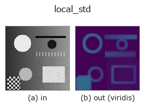

texture op• 資料種類:image → image
• 呼叫:fullseye.apply(img, "local_std", a=0.5, b=0.5)(2-D 的模型是一張圖 + 兩個純量旋鈕 a,b∈[0,1])

*圖為在 128×128 合成輸入上實際執行的輸出。左為輸入，右為輸出。點雲以俯視散點顯示(亮度 = z)，一維序列為折線，體資料為沿 z 的最大值投影，影片為中間影格，複數影像為振幅；無法成像的回傳值直接顯示數值。*
*輸出以類 viridis 偽彩色顯示(深紫 = 小，黃 = 大)，便於讀取距離、相位、方向、深度這類「量的場」。*
掃描旋鈕 a(0.1 / 0.5 / 0.9，另一旋鈕取預設):
▸ local_std: knob a sweep (docs site)
掃描旋鈕 b(0.1 / 0.5 / 0.9，另一旋鈕取預設):
▸ local_std: knob b sweep (docs site)
換別的影像(合成場景 / 照片 / 硬幣。上排為輸入，下排為對應輸出。旋鈕取預設):
▸ local_std: other inputs (docs site)
*第 4 欄是彩色 (H,W,3) 輸入。此運算子能正確處理顏色而不跨通道(不把顏色通道當作第三個空間軸摺積)。*
> 該運算子的說明尚無譯文,以下照原文給出。
局所窓内の標準偏差を入力と同じ単位で返す(正規化しない)。HALCON の `deviation_image`（Calculate the standard deviation of gray values within rectangular windows.）に相当。
`a が窓の**幅**を、b が窓の**高さ**をそれぞれ 3,5,7,9（_k）に振る —— HALCON の deviation_image(image, width, height)` と同じく矩形窓を取れる。
**`std_filter との違いはここだけで、そこが肝心**: std_filter は出力をその画像の最大値で正規化するので、**画像をまたいで値を比較できない**(弱いテクスチャしか無い画像では雑音が 1.0 まで持ち上がる)。この op は割らないので、**別の画像・別の時刻の値とそのまま比べられる**。HALCON の deviation_image も正規化しないので、意味としてはこちらが忠実。平滑化フィルタの sigma_image` とは別物(あちらは σ を使って平滑化する)。
推定量と誤差(閉形式): 窓の画素数を `n = 幅 x 高さ として、平均を引いた分散を n/(n-1) で不偏化し、さらに sigma の残る偏りを c4(n) ≈ 1 - 1/(4n) で抜く。したがって推定はほぼ無偏(実測: 真値の 99.8〜100.1%)。**1 画素あたりの相対標準誤差は 1/sqrt(2(n-1))`** —— 3x3 窓で約 25%、9x9 窓で約 7.9%(実測が理論と一致)。粗さや雑音量を数字で言うときは、この幅を併記すること。
入力が `[0,1] なら出力は 0 以上 0.55` 以下(最大は窓の半分が 0・半分が 1 のとき)。
• gallery2d_texture_freq 族使用指南
• 範例資料目錄(下載 URL / 授權) —— 2-D 用 skimage.data(BSD/公有領域)加合成圖,3-D 給出真實資料源(Stanford/PDS 等)的下載 URL。
• 運算子來歷與參考文獻 —— 該運算子族所依據的研究/方法出處。
• 演算法的正典(作者・年份)與用途見上面的族使用指南。
下面的程式已確認可以執行(與圖相同的輸入)。在 Studio 說明中，此區塊會變成按鈕，可當場載入並執行。
local_std 0.50 0.50
▸ Load this pipeline · Load & run
• gallery2d_texture_freq — py -3.11 examples/gallery2d_texture_freq.py
image 作為輸入)identity · gaussian · mean_box · bilateral · unsharp · median · min_filter · max_filter
texture)std_filter · gabor · sk_frangi · sk_meijering · sk_hessian · sk_gabor · sk_lbp · sk_entropy
*Provenance: ops.py — 2D 運算子登記表。本條目由 tools/opdocs.py md 自動產生(請勿手動編輯)。*
© 2026 Kazufumi Furuse — Fullseye operator documentation. Licensed under Apache-2.0.
{kind=link}
{kind=link}
{kind=link}